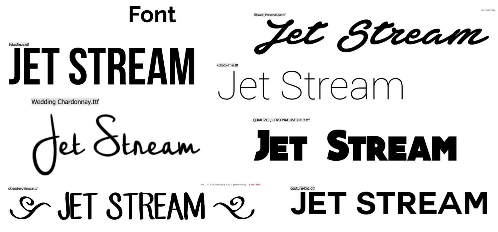
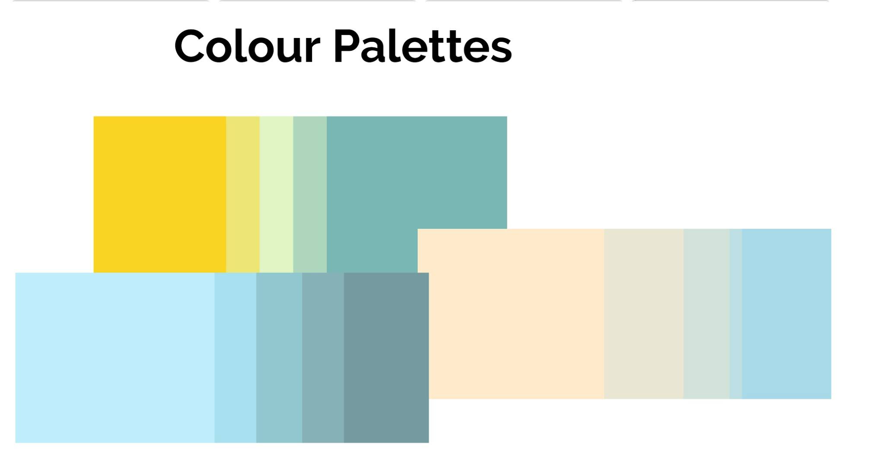

In our second semester we were set several projects, this was our second of 3 projects. We were given a few specific contexts in which we could choose from. We chose travelling on publiuc transport. Inparticular Flying.
The idea was simple, we thought that the screens onboard an aircraft were dated. With all the new technology that is out, passengers would rather use their own personal devices then look up into the isles or the back of chairs. Using NFC (Near Field Communication) we wanted to upload all of the flight data, and entertainment center onto your device, through an app in which you could download to IOS and Android.
These were some of our inital font ideas for the main 'Jetstream' title
We wanted to keep the main colour palette clean and simple. By doing so we thought that the over all theme to the app would look professional. Depending on which company you were flying with, would depend on the colours for the icons, we thought if each airline could make the app personal to themselves it would make for a better experience for the passengers.